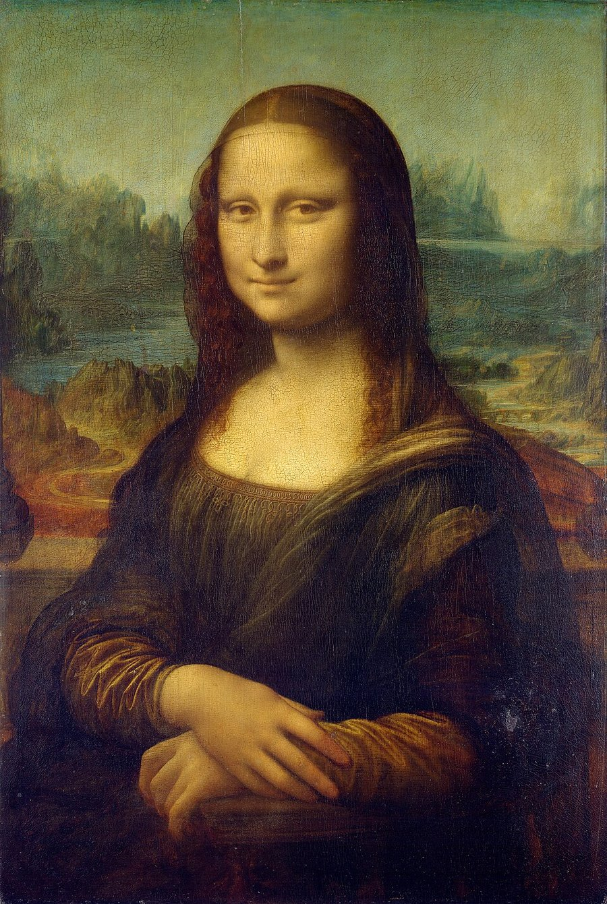
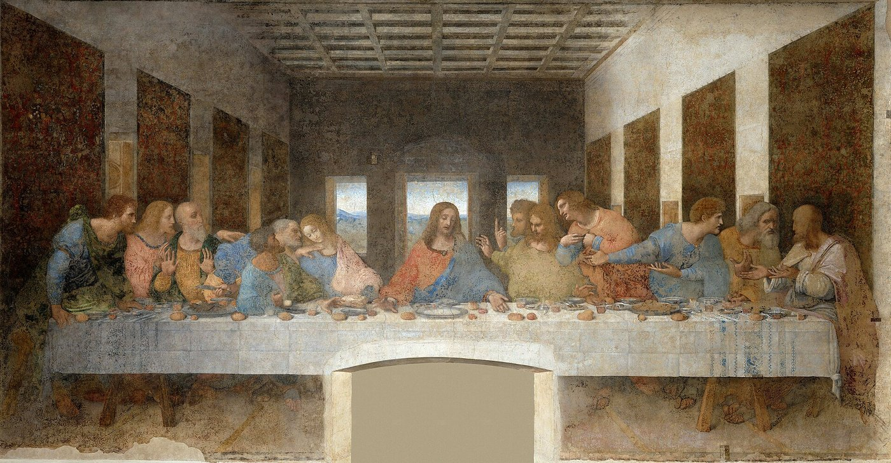
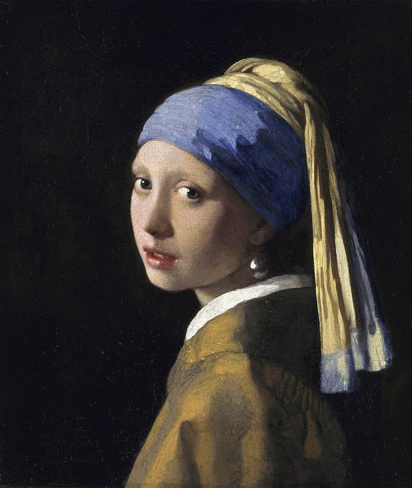
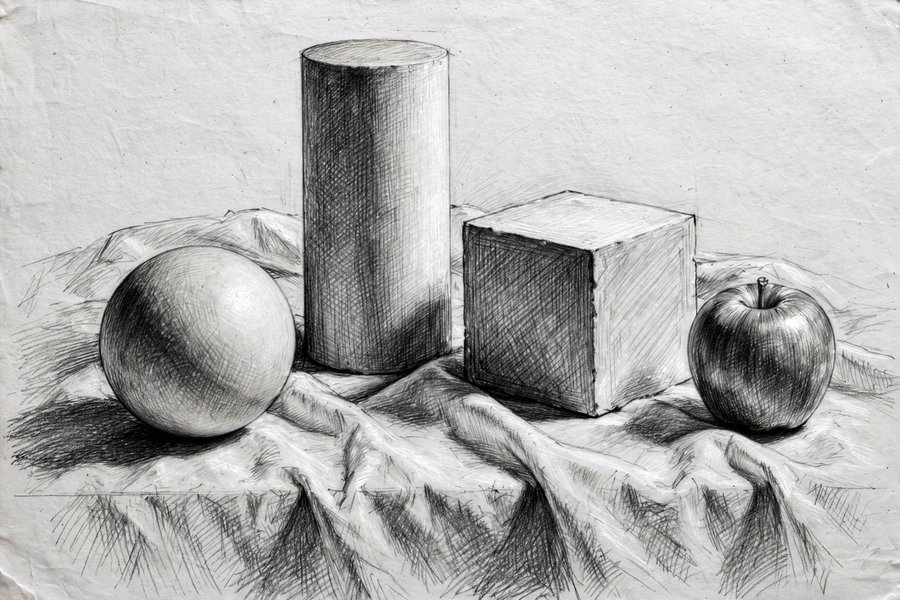

教科書P12〜15・60〜67、資料集の指定ページ、授業プリント「レオナルド・ダ・ヴィンチ」「フェルメール」が筆記の範囲で、実技は手のデッサンです。筆記は「作品名・作者名・技法」をセットで、実技は「全体から部分へ・明暗で立体感」の手順で押さえましょう。
| 項目 | 要点 |
|---|---|
| 人物像 | イタリア、ルネサンス期（15〜16世紀）の芸術家。絵画だけでなく彫刻・建築・解剖学・工学など多くの分野で活躍したため「万能の天才」と呼ばれる |
| ルネサンス | 「再生」という意味。古代ギリシャ・ローマの文化を見直し、人間中心の文化を花開かせた動き（14〜16世紀、イタリア中心） |
| 人体研究 | 人体のつくりを理解するために解剖を行い、構造を詳しく観察して手稿（スケッチやメモ）に残した |
| 構図 | 「岩窟の聖母」に見られるような、三角形を基本にした安定した配置（三角形の構図／ピラミッド型構図）を用いた |
| 作品 | 作者 | 要点 |
|---|---|---|
| モナ・リザ | レオナルド・ダ・ヴィンチ | 微妙な微笑みで知られる女性の肖像画。輪郭をぼかすスフマートの技法で描かれ、背景には遠くの風景が霞んで見える |
| 最後の晩餐 | レオナルド・ダ・ヴィンチ | キリストと12人の使徒（合わせて13人）の最後の食事の場面を描いた壁画。イタリア・ミラノの修道院の食堂にある |

モナ・リザ（レオナルド・ダ・ヴィンチ）：微妙な微笑みと、輪郭をぼかすスフマートの表現が特徴の肖像画です。

最後の晩餐（レオナルド・ダ・ヴィンチ）：キリストを中心に13人が食卓を囲む壁画。一点透視図法の消失点がキリストの頭部付近に置かれています。
技法の言葉
| 用語 | 意味 |
|---|---|
| スフマート | 輪郭線をぼかして、煙のように柔らかく移り変わらせる技法。「モナ・リザ」の柔らかな表情を生んでいる |
| 一点透視図法（遠近法） | 奥行きを表す平行な線が1つの消失点に集まるように描く方法 |
| 消失点 | 一点透視図法で、平行な線が集まって見える点。「最後の晩餐」ではキリストの頭部付近に置かれ、視線が中心に集まる |
「最後の晩餐」の工夫は、遠近法を使いキリストを中心に人物を配置して、場面に集中させる点にあります。作品名・作者名は漢字で正確に書けるようにしておきましょう。
| 項目 | 要点 |
|---|---|
| 人物像 | ヨハネス・フェルメール。17世紀のオランダの画家 |
| 作風の特徴 | 窓から差し込む光の表現が美しく、静かで落ち着いた室内の日常の場面を描いた |
| 好んだ主題 | 市民の日常生活（手紙を読む、牛乳を注ぐなど、室内の何気ない場面） |
| フェルメール・ブルー | ラピスラズリから作る高価な青色顔料ウルトラマリンのこと。フェルメールが効果的に使った深い青 |
| 栄えた背景 | バロックの時代（17世紀）のオランダでは市民の暮らしが豊かになり、市民が自分の家に飾る絵を求めるようになった |

真珠の耳飾りの少女（ヨハネス・フェルメール）：振り向きざまの少女の肖像画で、「北のモナ・リザ（オランダのモナ・リザ）」とも呼ばれます。
| 作品 | 作者 | 要点 |
|---|---|---|
| 真珠の耳飾りの少女 | ヨハネス・フェルメール | 振り向きざまの少女を大きく描いた肖像画。大きな真珠の耳飾りと、青と黄色の布が目印。「北のモナ・リザ」とも呼ばれる |
| 牛乳を注ぐ女 | ヨハネス・フェルメール | 女性が牛乳を注ぐ室内の日常場面を描いた代表作 |
ダ・ヴィンチとの違い：ダ・ヴィンチは宗教画や肖像など大きな主題を扱い科学的な探求も深めたのに対し、フェルメールは市民の日常の小さな場面を好んで描きました。時代も国も異なります（ダ・ヴィンチ＝ルネサンス期イタリア、フェルメール＝17世紀オランダ）。
デッサンは、対象をよく観察して描く観察画です。色ではなく、明暗（光と影）で立体感を作ります。
| 用語・観点 | 要点 |
|---|---|
| プロポーション | 全体の形や大きさの比率。デッサンでは最初に大きくとらえる |
| 構図 | 画面の中で、物の配置やバランスを考えること |
| 明暗 | 光が当たる面・影の面・最も暗い部分の違いを描き分けることが立体感につながる |
| ハッチング | 平行な線を重ねて面を作り、濃淡をつける描き方。交差させるクロスハッチングもある |
| 線描 | 物の輪郭だけを線で表した絵（アウトライン） |
| 陰と影 | 物自体につく影＝陰（シェード）、床や机などに落ちる影＝影（シャドウ）と区別することがある |
| 調子（グラデーション） | 線の重ね方や筆圧を細かく変えて滑らかにする。指やティッシュで軽くこする方法もあるが、こすりすぎに注意 |

デッサンの静物の例：形を大きくとらえ、光の当たる面と影の面の明暗を描き分ける練習の見本です。
本番の評価ポイント（実技30点）
| 観点 | 配点 | 見られること |
|---|---|---|
| ポーズ | 5点 | 力の入れ方や指の動きが伝わるポーズになっているか |
| 大きさ | 5点 | 手がほぼ実物大に描かれているか |
| 形の正確さとバランス | 10点 | 指の長さ・関節の位置・親指の付き方など、全体の比率が正確か |
| 立体感 | 10点 | 光が当たる面と影の面を描き分け、陰影の濃さが6段階以上あるか |
家庭での練習手順